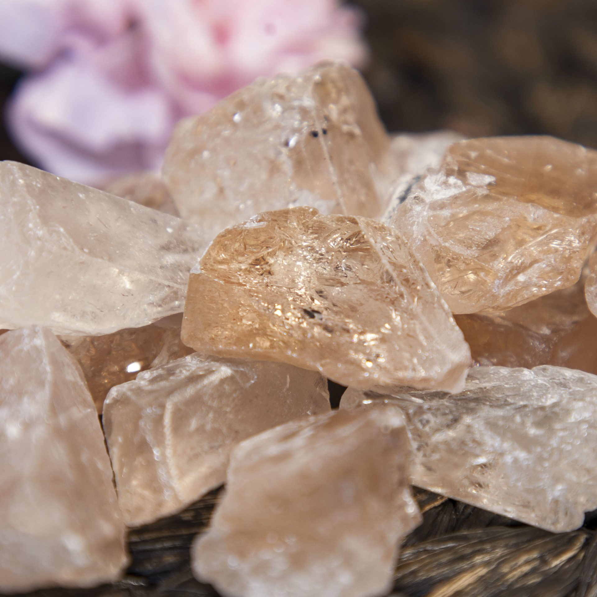

Topaz: The Multifaceted Gemstone of Strength and Beauty
Chemical Formula: Al₂SiO₄(FOH)₂ (Aluminum Silicate with Fluorine)
Color: Various (Yellow, Blue, Pink, Colorless, etc.)
Hardness: 8 on the Mohs scale
Crystal System: Orthorhombic
Localities: Brazil, Russia, Pakistan, Sri Lanka
Common Uses: Jewelry, Decorative Items, Carvings
Topaz is one of the most versatile and popular gemstones in the world, known for its wide range of colors and exceptional brilliance. It is a silicate mineral of aluminum and fluorine with the chemical formula Al₂SiO₄(FOH)₂. Though topaz is most famous for its golden-yellow hue, it naturally occurs in a variety of colors including blue, pink, orange, and colorless. The gemstone has been cherished throughout history and is associated with strength, healing, and protection.
The name "topaz" is believed to originate from the Greek word "topazios," referring to a small island in the Red Sea known for its gemstones. Topaz has been revered for its beauty and mystical properties, symbolizing love, truth, and abundance. It is the birthstone for November and is traditionally associated with protection against harm and negative energy.
Formation and Types of Topaz
Topaz forms in igneous rocks such as granite and rhyolite and is often found in cavities and veins within these rocks. The presence of fluorine in the formation environment is essential for the crystallization of topaz. It can also form in hydrothermal veins and in cavities within pegmatites.
There are several types of topaz, categorized by their color and treatment:
Imperial Topaz
This is the most valuable and rare variety of topaz, featuring a rich golden-yellow to reddish-orange color. Imperial topaz is primarily found in Brazil and is highly sought after for its vibrant hue and rarity.
Blue Topaz

Naturally occurring blue topaz is rare, and most blue topaz on the market is created by treating colorless or lightly colored topaz with irradiation and heat. Blue topaz ranges from light "Sky Blue" to deep "London Blue."
Pink Topaz
Pink topaz is another rare and valuable variety, with its pink color often resulting from trace elements of chromium. In some cases, pink topaz is produced through heat treatment.
Mystic Topaz
Mystic topaz is created by applying a thin coating to colorless or lightly colored topaz, giving it a rainbow or iridescent appearance. The treatment is permanent and adds a unique colorful sheen to the stone.
Colorless Topaz (White Topaz)
Colorless topaz is a popular gemstone in its own right, often used as a diamond substitute. It is abundant and can be treated to produce various colors.
Structure and Properties of Topaz
Topaz belongs to the orthorhombic crystal system and has a prismatic crystal structure that often forms elongated columnar shapes. It is known for its excellent clarity, durability, and brilliance.
- Hardness: Topaz has a hardness of 8 on the Mohs scale, making it one of the hardest gemstones, though it is still susceptible to cleavage and chipping if struck at the right angle. Its durability makes it suitable for everyday wear in jewelry.
- Color: Topaz can be found in a wide array of colors, including yellow, blue, pink, orange, brown, and colorless. The gemstone's color is determined by trace elements such as iron and chromium, or through irradiation and heat treatments.
- Luster: Topaz exhibits a vitreous (glassy) luster when polished, giving it a bright, reflective surface. This luster enhances the gemstone's natural brilliance and makes it a popular choice for faceted gemstones.
- Clarity: High-quality topaz is typically eye-clean, meaning it has no visible inclusions. Colorless topaz in particular often displays exceptional clarity and transparency, making it an ideal stone for jewelry.
Uses of Topaz

Topaz has been used for various purposes throughout history, from jewelry to metaphysical tools:
Jewelry
Topaz is a highly popular gemstone for all types of jewelry, including rings, necklaces, earrings, and bracelets. Its wide range of colors and affordability make it a versatile choice for both fine and costume jewelry. Imperial topaz and blue topaz are especially favored for statement pieces and elegant designs.
Decorative Items
Due to its size and clarity, topaz is also used in carvings, sculptures, and other decorative objects. Large topaz crystals are often displayed as natural specimens or polished into ornamental shapes for home décor.
Metaphysical Uses
Topaz is believed to possess various metaphysical properties, including promoting clarity of thought, emotional healing, and protection. It is often used in meditation practices and is associated with the crown chakra, helping to align and balance energies.
History of Topaz
The history of topaz is rich and spans several cultures and time periods:
- Ancient Egypt: The Egyptians believed topaz was a symbol of the sun god Ra, and the gemstone was often used in amulets and talismans. Its golden color was thought to bring protection and strength.
- Ancient Rome and Greece: The Romans and Greeks believed topaz had the power to improve eyesight and bring strength and protection to its wearer. The gemstone was also associated with Jupiter, the king of the gods.
- Middle Ages: During the Middle Ages, topaz was thought to have magical properties, including the ability to break spells and cure diseases. It was worn by royalty and clergy as a symbol of divine favor and protection.
- Modern Times: Today, topaz continues to be a popular gemstone, particularly in fine jewelry. Advances in mining and treatment techniques have made topaz more accessible, allowing a broader audience to enjoy its beauty and versatility.
Unusual Varieties of Topaz
In addition to the more common varieties, there are some unusual and rare forms of topaz:
Sherry Topaz
Sherry topaz is a unique variety of yellow-brown topaz with a warm cognac-like hue. It is typically found in Brazil and is valued for its distinctive color.
Bi-Color Topaz
Some topaz crystals exhibit multiple colors within a single stone, often with a gradient effect from one color to another. These bi-color topaz gems are highly prized for their unique appearance.
Rutilated Topaz

Rutilated topaz contains needle-like inclusions of rutile, giving the stone a distinctive spiky appearance. These inclusions can enhance the stone's beauty and add to its metaphysical properties.
Enhancement of Topaz
To enhance its appearance and marketability, topaz may undergo various treatments:
- Irradiation and Heat Treatment: Most blue topaz on the market is created by irradiating and then heat-treating colorless or lightly colored topaz. This treatment is stable and permanent, producing a range of blue shades from "Sky Blue" to "London Blue."
- Heat Treatment: Heat treatment is also used to enhance or create the pink color in pink topaz. Natural pink topaz is rare, so most pink topaz on the market has been heat-treated.
- Coating: Mystic topaz is created by applying a thin coating to colorless or lightly colored topaz. This coating creates a rainbow effect on the stone's surface and is permanent as long as the stone is not re-polished.
- Dyeing: Some topaz, particularly colorless varieties, may be dyed to produce vibrant colors not naturally found in the stone. This treatment is less common and should be disclosed as dyed topaz is less valuable than natural or treated stones.
Famous Finds and Topaz
Topaz has been discovered in various parts of the world, with some famous finds being particularly notable:
The El-Dorado Topaz
Weighing 31,000 carats, the El-Dorado Topaz is the largest faceted gemstone in the world. It is a yellow topaz and was discovered in Brazil, the world's leading source of topaz.
The American Golden Topaz

This massive 22,892-carat gemstone is one of the largest faceted gems in the world. It was cut from a crystal found in Brazil and is on display at the Smithsonian Institution in Washington, D.C.
The Topaz of Aurangzeb
This historical topaz, weighing over 157 carats, was owned by the Mughal Emperor Aurangzeb. The gemstone is known for its exceptional clarity and size and is considered one of the most important topaz specimens.
Sourcing Locations and Mining
Topaz is sourced from several key locations around the world, each known for producing stones with distinct characteristics:
- Brazil: Brazil is the largest producer of topaz, particularly imperial topaz and blue topaz. The Minas Gerais region is famous for its high-quality topaz crystals, which are often large and well-formed.
- Russia: Russia, particularly the Ural Mountains, has historically been a significant source of topaz. Russian imperial topaz is known for its reddish-golden hue and was once reserved exclusively for the royal family.
- Pakistan: Pakistan is known for producing high-quality pink topaz, particularly from the Katlang region. These stones are prized for their vibrant color and good clarity.
- Sri Lanka: Sri Lanka is a source of colorless topaz, which is often used in jewelry and can be treated to produce blue or pink varieties.
Where to Find Topaz in the United States
The United States, particularly Utah, Virginia, and Montana amongst other states, is a major source of topaz. Use our gemstone and crystals map to locate different topaz locations across the United States.
Exploration and Mining
The exploration and mining of topaz involve locating suitable deposits and extracting the stone with care:
Exploration
Geological surveys and sampling are conducted to locate topaz deposits, typically in igneous rocks such as granite and rhyolite. Traditional prospecting methods, such as surface exploration and test drilling, are used to identify potential mining sites.
Mining Methods
Topaz is typically mined using open-pit or underground mining techniques, depending on the depth of the deposit. Large topaz crystals are often extracted by hand to prevent damage, while smaller crystals may be mined using mechanized methods.
Processing
After extraction, topaz is cleaned, sorted, and graded based on its color, clarity, and overall quality. The stone is then cut and polished for use in jewelry or as collector specimens.
Identifying Authentic Topaz
Identifying authentic topaz involves examining several key characteristics:
- Color: Topaz comes in a wide range of colors, from golden-yellow to blue, pink, and colorless. The most valuable topaz, such as imperial topaz, has a rich, saturated color with no zoning or unevenness.
- Clarity: High-quality topaz is typically eye-clean, meaning it has no visible inclusions. Stones with visible inclusions or a cloudy appearance are less valuable, although some inclusions like rutile needles can add to the stone's appeal.
- Testing Methods: Common tests for authenticity include checking the stone's refractive index (1.61 to 1.63) and examining it under a loupe to identify any characteristic inclusions. Topaz should have a natural, consistent color and luster.
- Certification: High-quality topaz, particularly rare and valuable specimens, may come with a certificate of authenticity from a reputable gemological laboratory. This certification provides detailed information about the stone's characteristics and any treatments.
Buy & Sell Authentic Topaz Here
Cutting and Polishing Topaz
Cutting and polishing topaz is a skilled process that enhances the stone's natural beauty:
- The Cutting Process: Topaz is typically cut into faceted shapes, such as oval, pear, or emerald cuts, to maximize its brilliance and color. The cutter must carefully plan the cut to avoid cleavage and enhance the stone's natural sparkle.
- Polishing: After cutting, topaz is polished to a high gloss using fine abrasives. The polishing process enhances the stone's luster and clarity, giving it a smooth, reflective surface.
- Carving: Due to its hardness, topaz is also used for carving intricate designs, such as figurines, small sculptures, and ornamental objects. Skilled artisans can create detailed carvings that highlight the stone's unique color and clarity.
Topaz Market and Trade
The market for topaz is influenced by several factors, including quality, origin, and demand:
- Value Determinants: The value of topaz is determined by its color, clarity, and overall quality. Stones with a rich, saturated color and high clarity are the most valuable. Imperial topaz and pink topaz are particularly prized for their rarity and unique color.
- Global Trade: Brazil, Russia, and Pakistan are the leading producers of topaz. The global trade of topaz is driven by demand from jewelers, collectors, and enthusiasts who value the stone for its unique beauty and versatility.
- Market Trends: Topaz continues to be popular in jewelry and decorative arts. The demand for ethically sourced topaz is increasing, particularly as consumers become more aware of the conditions in which the gemstone is mined. Imperial topaz and blue topaz are especially sought after in the global market.
Buy & Sell Authentic Topaz Here
Caring for Topaz
Topaz requires proper care to maintain its beauty and prevent damage:
- Cleaning: Clean topaz with warm, soapy water and a soft cloth. Avoid ultrasonic cleaners and harsh chemicals, as these can damage the stone's surface or cause it to crack. Topaz should not be exposed to extreme temperatures or acids.
- Storage: Store topaz separately from other gemstones to prevent scratches. Keep it in a soft pouch or lined jewelry box to protect it from dust and abrasion.
- Handling: Topaz is relatively hard and durable, but it can still be prone to chipping and cleavage if struck at the right angle. Handle it with care, especially when wearing or cleaning jewelry. Avoid exposing topaz to direct sunlight for prolonged periods, as this can cause the color to fade.
- Repolishing: Over time, topaz may lose its luster due to wear and tear. Professional repolishing can restore the stone's shine and enhance its appearance.
Metaphysical Properties of Topaz
Topaz has been attributed with various metaphysical properties throughout history:
- Clarity and Truth: Topaz is often associated with clarity of thought and truth. It is believed to enhance mental focus, promote honesty, and bring clarity to difficult situations.
- Emotional Healing: Topaz is considered a stone of emotional healing. It is believed to soothe emotions, alleviate stress, and promote a sense of peace and well-being.
- Protection and Strength: Topaz is thought to provide protection against harm and to give the wearer strength and courage. It is often used as a protective talisman in various cultures.
- Crown Chakra: Topaz is associated with the crown chakra, making it a popular choice for those seeking to enhance their spiritual connection, intuition, and insight. It is believed to balance the crown chakra and promote a strong connection to higher consciousness.
See Also
- Related Crystals and Gemstones: Citrine, Spinel, Beryl
- Relevant Topics: Topaz Cutting, Historical Uses of Topaz, Ethical Sourcing of Gemstones